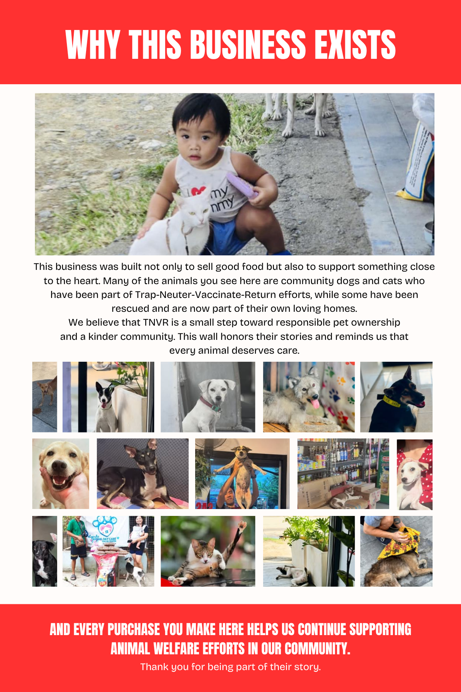

Ashi's Frozen Goods is based at Door 4, AC Arcade Building, Felix Gorriceta Jr. Avenue, Pavia, 5001 Iloilo, in Brgy. Pandac. We offer quality GenSan tuna, premium salmon, sashimi, and premium steak cuts for households and food businesses.
You can browse our photo-and-price menu, then visit the shop to pick up, or message us on Messenger to order. We are open daily from 10:00 AM to 7:00 PM.
Why this business exists
This business was built not only to sell good food but also to support something close to the heart. Many of the animals you see here are community dogs and cats who have been part of Trap-Neuter-Vaccinate-Return efforts, while some have been rescued and are now part of their own loving homes.
We believe that TNVR is a small step toward responsible pet ownership and a kinder community. This wall honors their stories and reminds us that every animal deserves care.

And every purchase you make here helps us continue supporting animal welfare efforts in our community. Thank you for being part of their story.
What we sell
- GenSan tuna — panga, belly, sashimi, saku, steaks, and processed tuna favorites
- Salmon — sashimi, loin, steaks, fillets, belly, and more
- Imported steaks — USDA, Brazilian, Australian, and Japanese wagyu cubes
How to buy
Visit / pick up at the Pavia shop, or message us on Messenger. See the Menu for current photos, pack sizes, and prices. Full contact details are on the Contact page.
Mission
To offer quality GenSan tuna, premium salmon, sashimi, and premium steak cuts for households and food businesses, while creating opportunities for people, advocating for animal welfare, and supporting meaningful community initiatives.
Vision
To be a trusted Iloilo brand for premium frozen seafood and meats, growing through quality, service, and a shared commitment to our community.
Visit us
Door 4, AC Arcade Building, Felix Gorriceta Jr. Avenue, Pavia, 5001 Iloilo
Directions: Brgy. Pandac, Pavia
Daily 10:00 AM–7:00 PM